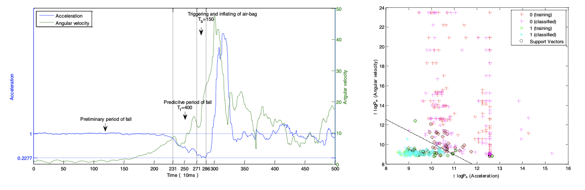

LIN Dan
|
 |
Biography
I am a postdoc at Cornell University under the supervision of Dr. Jessica McArt . Our work is committed to advancing Digital Animal Health, a proactive approach to animal healthcare that aims to promote their healthier lives before diseases manifest.
News
- [01/2023] Our paper "Transformer Neural Network to Predict and Interpret Pregnancy Loss from Activity Data in Holstein Dairy Cows" has been published.
- [09/2021] Our paper "Comparative Genomics Reveals Recent Adaptive Evolution in Himalayan Giant Honeybee Apis laboriosa" has been published.
- [09/2020] My undergraduate thesis project "Keratoconus Diagnosis: Validation of a Novel Parameter Set Derived from IOP-Matched Scenario" has been published.
Publications [Google Scholar]

|
Transformer Neural Network to Predict and Interpret Pregnancy Loss from Activity Data in Holstein Dairy Cows Dan Lin*, Ákos Kenéz, Jessica A.A. McArt, Jun Li [paper][code] |
| Comparative Genomics Reveals Recent Adaptive Evolution in Himalayan Giant Honeybee Apis laboriosa Dan Lin*, Lan Lan*, Tingting Zheng, Peng Shi, Jinshan Xu, Jun Li [paper][supplemental files][code] |
|

|
Treatment with mixed probiotics induced enhanced and diversified modulation of the gut microbiome of healthy rats Qiuwen He*, Jiating Huang*, Tingting Zheng, Dan Lin, Heping Zhang, Jun Li, Zhihong Sun [paper] |

|
Keratoconus Diagnosis: Validation of a Novel Parameter Set Derived from IOP-Matched Scenario Dan Lin*, Lei Tian, Shu Zhang, Like Wang, Ying Jie, Yongjin Zhou [paper] |
| PRSNet : Part Relation and Selection Network for Bone Age Assessment Yuanfeng Ji, Hao Chen, Dan Lin, Xiaohua Wu, Di Lin [paper][code] |
|
|  | Pre-impact Alarm System for Fall Detection Using MEMS Sensors and HMM-based SVM Classifier Shengyun Liang, Tianyue Chu, Dan Lin, Yunkun Ning, Huiqi Li, Guoru Zhao [paper] |
Teaching
CityU VM2100 (2024) - Confidence interval and sample size, 2h lecture
CityU VM2100 (2024) - Study design and Literature review, 2h lecture
Experiences
Visiting PhD student, Cornell University, 2023
Visiting undergraduate student in Shenzhen Institute of Advanced Technology, 2017
Selected Honors and Awards
Institutional Research Tuition Scholarship, City University of Hong Kong, 2022
Dean's List Award, The Chinese University of Hong Kong, 2019
Distinguished Graduate, Shenzhen University, 2018
© LIN Dan | Last updated: Nov. 2024